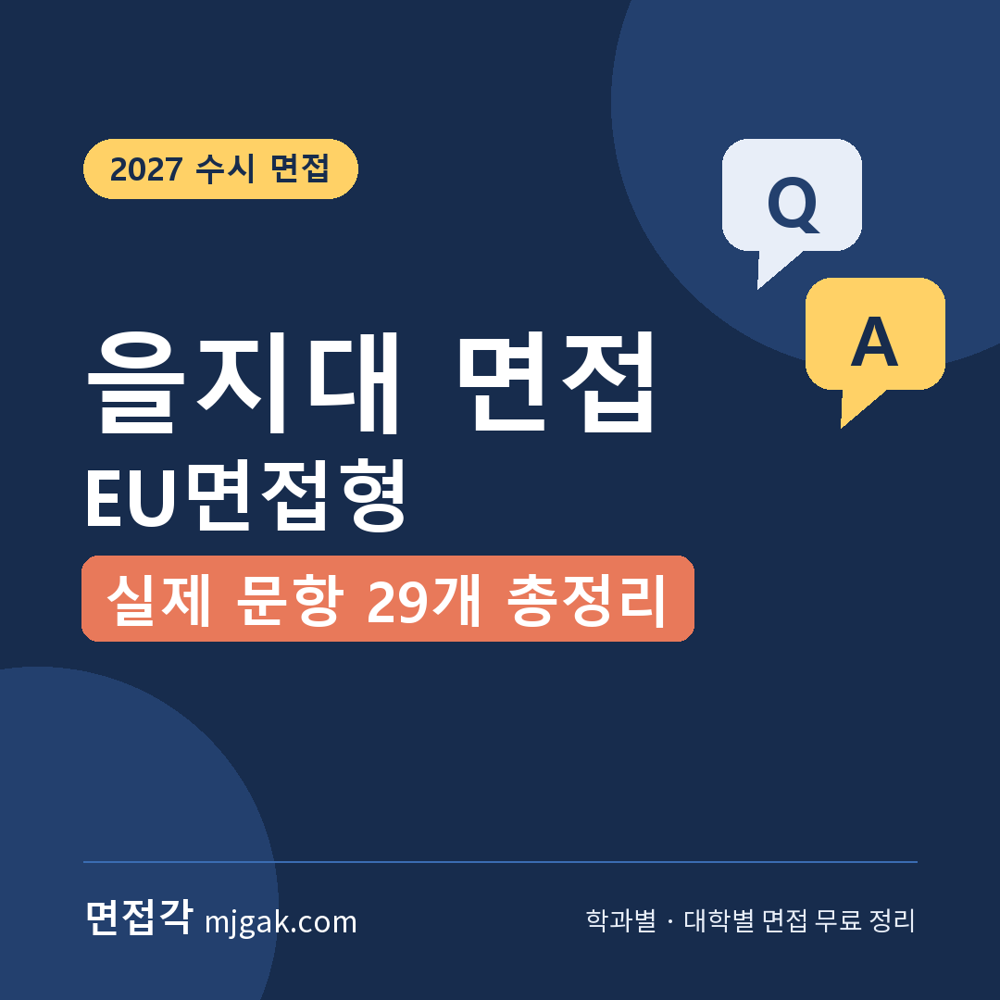
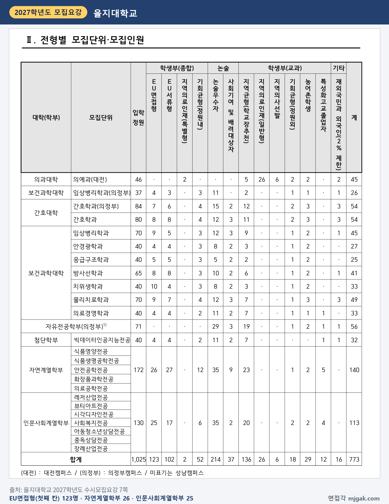
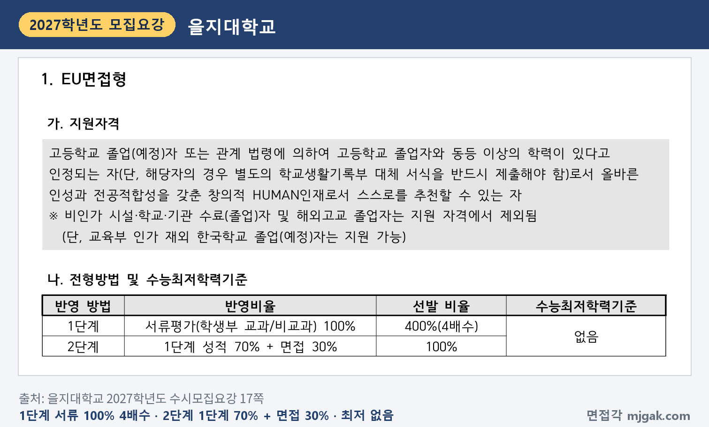
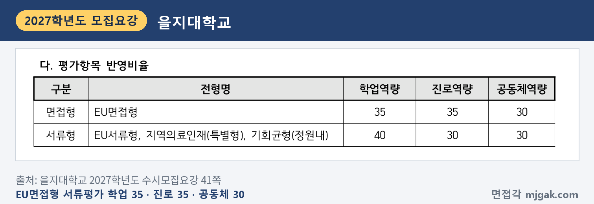
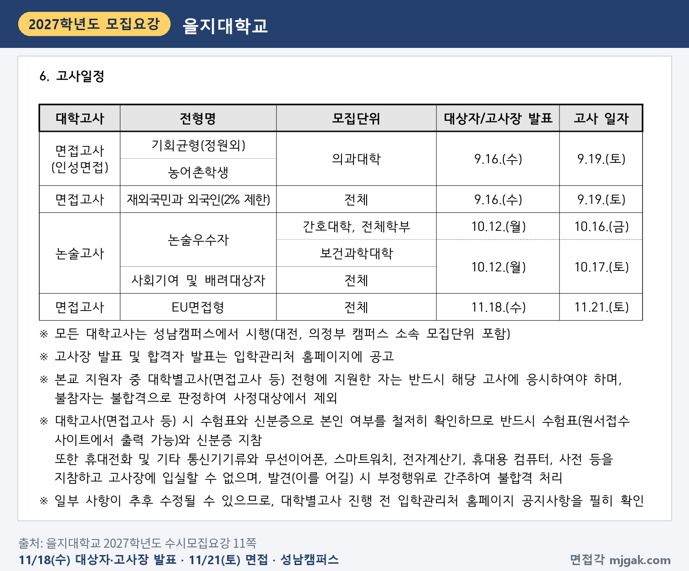
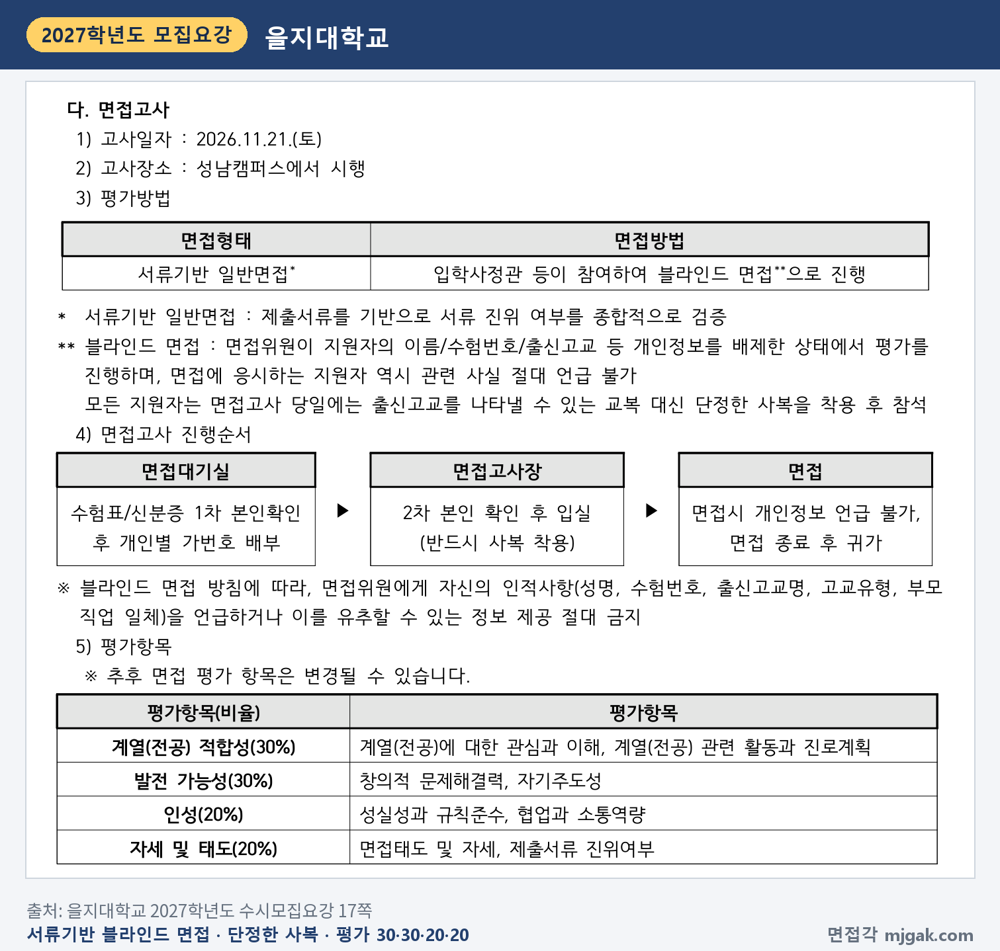
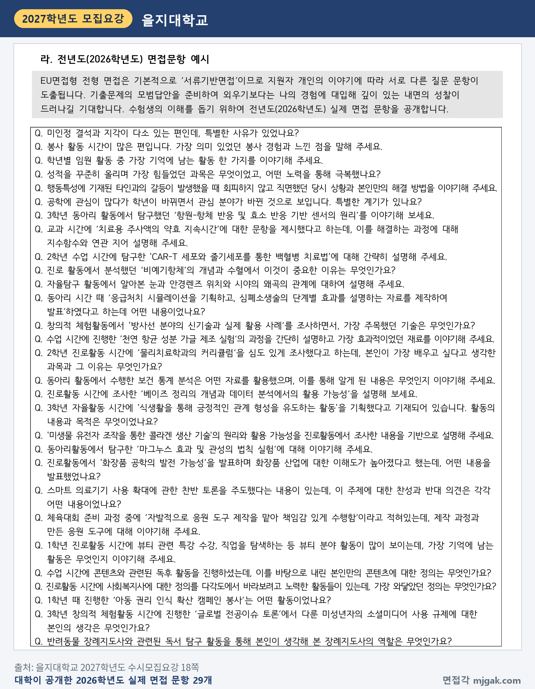
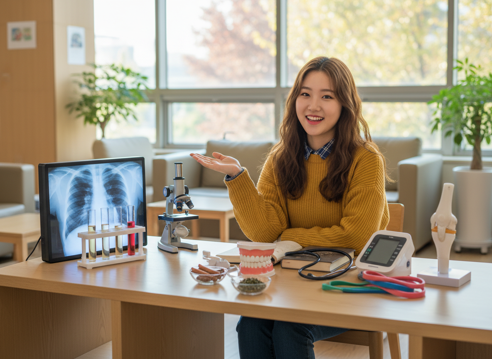
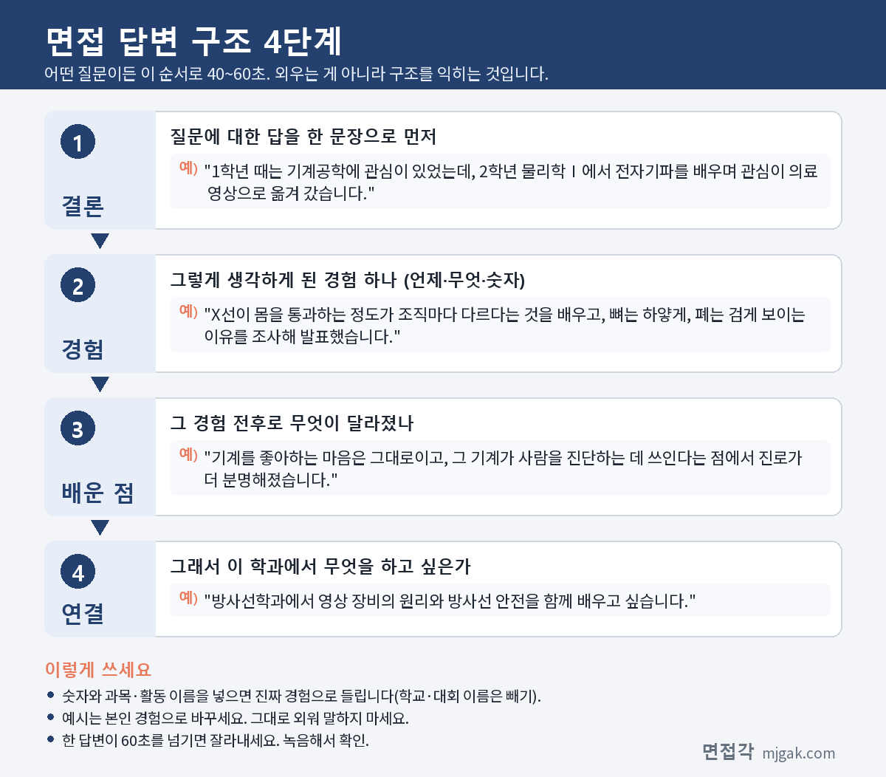

Ctrl+V (서식 유지됨)제목
본문 (이 영역 전체가 복사됩니다)
📷 여기에 이미지 넣기 — 썸네일 — thumb-eulji.png (대표 이미지로 지정)
을지대 EU면접형에서 먼저 챙길 것은 날짜 순서입니다. 면접대상자 발표는 수능 전날인 11월 18일(수)이고, 면접은 수능(11월 19일, 목) 이틀 뒤인 11월 21일(토) 성남캠퍼스에서 봅니다. 수능이 끝난 뒤 면접 전까지 남는 날은 11월 20일(금) 하루입니다(이 글에서 계산한 값). 2단계는 1단계 성적 70%와 면접 30%를 합산하고, 면접은 제출서류를 바탕으로 보는 블라인드 면접이며, 수능최저학력기준은 없습니다. 을지대는 모집요강에 2026학년도 실제 면접 문항 29개를 공개했습니다. 이 글은 을지대학교 2027학년도 수시모집요강으로 전형 방법, 일정, 면접 방식, 공개 문항 7개의 답변법, 수능 뒤 하루를 쓰는 준비 순서를 정리했습니다. EU면접형에 지원한 고3과 재수생이 읽으시면 됩니다.
1. EU면접형, 2027학년도에는 어떻게 보나
EU면접형은 학생부종합전형으로 123명을 뽑습니다. 인원이 많은 곳은 자연계열학부 26명, 인문사회계열학부 25명, 치위생학과 10명, 임상병리학과·물리치료학과 각 9명입니다. 간호학과는 성남 8명·의정부 7명, 임상병리학과(의정부)는 4명이고, 의예과(대전)와 자유전공학부(의정부)는 이 전형으로 뽑지 않습니다(7쪽). 대전·의정부 캠퍼스 소속 모집단위도 대학고사는 성남캠퍼스에서 봅니다(11쪽). 비인가 시설·학교·기관 수료(졸업)자와 해외고교 졸업자는 지원할 수 없습니다(단, 교육부 인가 재외 한국학교 졸업(예정)자는 지원 가능, 17쪽).
📷 여기에 이미지 넣기 — 캡처 1 — 을지대학교 2027학년도 수시모집요강 7쪽: eulji-2027-eu-units.png
전형 방법은 1단계에서 서류평가(학생부 교과/비교과) 100%로 4배수를 뽑고, 2단계에서 1단계 성적 70%와 면접 30%를 합산합니다. 수능최저학력기준은 없습니다(17쪽). 모집인원에 4를 곱해 이 글에서 계산하면 자연계열학부 104명, 인문사회계열학부 100명, 치위생학과 40명이 1단계 합격 규모입니다.
📷 여기에 이미지 넣기 — 캡처 2 — 을지대학교 2027학년도 수시모집요강 17쪽: eulji-2027-eu-method.png
EU면접형 서류평가는 학업역량 35, 진로역량 35, 공동체역량 30을 반영하고(41쪽), 학년별 차등 없이 졸업예정자는 3학년 1학기까지 봅니다(40쪽). 학교폭력 조치사항은 서류평가에서 정성평가 및 기타(부적격 등)로 반영합니다(41·44쪽).
📷 여기에 이미지 넣기 — 캡처 3 — 을지대학교 2027학년도 수시모집요강 41쪽: eulji-2027-eu-docs.png
동점자는 1단계 성적, 면접 계열(전공) 적합성, 면접 발전가능성 순으로 가립니다(45쪽). 전형료는 80,000원이고, 면접대상자가 되지 못하면 면접고사비 20,000원을 돌려줍니다. 대학고사에 결시하면 성적과 관계없이 불합격이고 전형료도 돌려주지 않습니다(9쪽).
2. 언제 보나: 수능 전날 발표, 수능 이틀 뒤 면접
- 11월 18일(수): 면접대상자·고사장 발표, 입학관리처 홈페이지 공고(11쪽)
- 11월 19일(목): 수능
- 11월 21일(토): 면접, 성남캠퍼스(11·17쪽)
- 12월 18일(금): 최초 합격자 발표, 개별 통보 없음(12쪽)
발표에서 면접까지 3일, 수능에서 면접까지 2일입니다(이 글에서 계산한 값). 대학별고사에 지원한 사람은 반드시 응시해야 하고 불참하면 불합격입니다(11쪽). 최초 합격자 문서등록은 12월 21일(월)~23일(수)입니다(12쪽).
📷 여기에 이미지 넣기 — 캡처 4 — 을지대학교 2027학년도 수시모집요강 11쪽: eulji-2027-eu-schedule.png
3. 면접은 어떻게 보나
면접 형태는 '서류기반 일반면접'으로, 제출서류를 기반으로 서류 진위 여부를 종합적으로 검증합니다. 입학사정관 등이 참여하는 블라인드 면접입니다(17쪽). 1인당 면접 시간과 면접위원 수는 모집요강에 적혀 있지 않습니다.
평가 항목은 네 가지이고, 모집요강에 "추후 면접 평가 항목은 변경될 수 있습니다"라고 적혀 있습니다(17쪽).
- 계열(전공) 적합성 30%: 계열(전공)에 대한 관심과 이해, 계열(전공) 관련 활동과 진로계획
- 발전 가능성 30%: 창의적 문제해결력, 자기주도성
- 인성 20%: 성실성과 규칙준수, 협업과 소통역량
- 자세 및 태도 20%: 면접태도 및 자세, 제출서류 진위여부
📷 여기에 이미지 넣기 — 캡처 5 — 을지대학교 2027학년도 수시모집요강 17쪽: eulji-2027-eu-interview.png
진행 순서는 대기실에서 수험표·신분증으로 1차 본인 확인을 하고 개인별 가번호를 받은 뒤, 2차 본인 확인 후 입실합니다. 모든 지원자는 교복 대신 단정한 사복을 입고 참석해야 하고, 성명·수험번호·출신고교명·고교유형·부모 직업 일체를 말하거나 유추할 수 있는 정보를 주면 안 됩니다(17쪽). 수험표(원서접수 사이트에서 출력)와 신분증을 반드시 가져가야 하고, 휴대전화·무선이어폰·스마트워치·전자계산기 등을 지닌 채 고사장에 들어갈 수 없으며 발견되면 부정행위로 불합격입니다(11쪽).
4. 대학이 공개한 2026학년도 문항 7개와 답변법
을지대는 모집요강 18쪽에 2026학년도 실제 면접 문항 29개를 공개하고, "기출문제의 모범답안을 준비하여 외우기보다는" 내 경험에 대입해 답하길 기대한다고 적었습니다. 앞의 6개는 출결·봉사·임원·성적·행동특성·관심 분야 변화처럼 학생부 전체 흐름을 묻고, 나머지는 학생부에 적힌 탐구·활동 한 줄을 짚어 내용과 원리를 묻습니다(이 글에서 나눈 것). 아래 7개는 그대로 옮긴 문항이고, 괄호의 평가 항목 연결과 답변 예시는 이 글에서 만든 가상의 예시입니다.
📷 여기에 이미지 넣기 — 캡처 6 — 을지대학교 2027학년도 수시모집요강 18쪽: eulji-2027-eu-questions.png
▶ 질문 1. 공학에 관심이 많다가 학년이 바뀌면서 관심 분야가 바뀐 것으로 보입니다. 특별한 계기가 있나요? (계열(전공) 적합성)
왜 묻나: 학생부의 진로 기록이 바뀐 지점을 짚습니다. "계열(전공)에 대한 관심과 이해"가 어떻게 생겼는지를 묻는 질문입니다.
답변 구조: 바뀐 방향 한 문장 → 계기가 된 수업 장면 → 바뀌지 않은 관심 → 학과 연결.
답변 예시 (방사선학과):
"1학년 때는 기계공학에 관심이 있었는데, 2학년 물리학Ⅰ에서 전자기파를 배우며 관심이 의료 영상으로 옮겨 갔습니다. X선이 몸을 통과하는 정도가 조직마다 다르다는 것을 배우고, 뼈는 하얗게, 폐는 검게 보이는 이유를 조사해 발표했습니다. 기계를 좋아하는 마음은 그대로이고, 그 기계가 사람을 진단하는 데 쓰인다는 점에서 진로가 더 분명해졌습니다. 방사선학과에서 영상 장비의 원리와 방사선 안전을 함께 배우고 싶습니다."
주의: 바뀐 것을 숨기지 마세요. 이전 관심과 지금 관심을 잇는 한 문장이 있으면 됩니다.
▶ 질문 2. 성적을 꾸준히 올리며 가장 힘들었던 과목은 무엇이었고, 어떤 노력을 통해 극복했나요? (발전 가능성: 자기주도성)
왜 묻나: 성적 변화의 이유를 묻습니다. 스스로 공부 방법을 바꾼 과정에서 "자기주도성"이 드러납니다.
답변 구조: 힘들었던 과목과 이유 → 바꾼 공부 방법 → 결과 → 학과와 연결.
답변 예시 (임상병리학과):
"가장 힘들었던 과목은 화학Ⅰ입니다. 몰 계산 문제를 공식에 숫자만 넣어 풀다 보니 조건이 조금만 바뀌어도 틀렸습니다. 그래서 문제마다 '무엇을 알고 무엇을 구하나'를 한 줄로 먼저 쓰고, 틀린 문제는 사흘 뒤 다시 푸는 노트를 만들었습니다. 2학기에는 계산 문제에서 실수가 크게 줄었고, 검사 수치도 결국 농도 계산이라는 것을 알게 되어 임상병리학과 공부에 자신이 생겼습니다."
주의: "열심히 했습니다" 대신 바꾼 방법 하나를 구체적으로 말하세요.
▶ 질문 3. 수업 시간에 진행한 '천연 항균 성분 가글 제조 실험'의 과정을 간단히 설명하고 가장 효과적이었던 재료를 이야기해 주세요. (계열(전공) 적합성, 자세 및 태도: 제출서류 진위여부)
왜 묻나: 학생부의 탐구 한 줄을 짚어 과정과 결과를 묻습니다. 모집요강은 이 면접이 제출서류의 진위 여부를 종합적으로 검증한다고 적었습니다(17쪽).
답변 구조: 실험 목적 한 문장 → 방법(비교한 조건) → 결과 → 한계 → 학과와 연결.
답변 예시 (치위생학과):
"녹차, 계피, 소금으로 각각 가글액을 만들어 항균 효과를 비교했습니다. 선생님 지도 아래 실험용 세균을 바른 배지에 가글액을 적신 종이 원판을 올리고, 이틀 뒤 원판 둘레에 세균이 자라지 않은 띠의 너비를 쟀습니다. 제 실험에서는 계피 우린 물의 띠가 가장 넓었습니다. 배지 한 장씩으로만 비교해 반복 실험이 필요하다는 한계도 적었고, 치위생학과에서 구강 세균과 예방 관리를 제대로 배우고 싶습니다."
주의: 결과만 말하지 말고 무엇을 같게, 무엇을 다르게 했는지 비교 조건을 넣으세요.
📷 여기에 이미지 넣기 — 이미지 1 — 제미나이 생성: 늦가을 햇살이 드는 캠퍼스 라운지에서 X선 필름·시험관과 현미경·치아 모형·청진기·혈압계 옆에서 답하는 여학생(실사) / "제미나이 프롬프트 1" · gem-eulji-1.png
(AI로 만든 이미지로, 실제 캠퍼스와 다를 수 있습니다)
▶ 질문 4. 스마트 의료기기 사용 확대에 관한 찬반 토론을 주도했다는 내용이 있는데, 이 주제에 대한 찬성과 반대 의견은 각각 어떤 내용이었나요? (인성: 협업과 소통역량)
왜 묻나: 양쪽 의견을 모두 정리해 말할 수 있는지, 토론을 "주도"한 역할이 무엇이었는지를 함께 묻습니다.
답변 구조: 찬성 근거 → 반대 근거 → 내가 한 역할 → 정리된 결론 → 학과 연결.
답변 예시 (의료경영학과):
"찬성 쪽은 혈압이나 혈당을 집에서 재 기록이 쌓이면 만성질환을 꾸준히 관리할 수 있다고 했습니다. 반대 쪽은 건강 정보가 새어 나갈 위험과, 기기를 다루기 어려운 어르신이 소외될 수 있다는 점을 들었습니다. 저는 사회자로 양쪽 근거를 표로 정리해 보여 주었고, 쓰기 쉬운 기기와 정보 보호 기준이 함께 가야 한다는 쪽으로 의견이 모였습니다. 의료경영학과에서 새 기술을 병원에 들이는 기준을 배우고 싶습니다."
주의: 내 입장만 길게 말하지 말고, 질문대로 찬성과 반대를 먼저 나눠 답하세요.
▶ 질문 5. 행동특성에 기재된 타인과의 갈등이 발생했을 때 회피하지 않고 직면했던 당시 상황과 본인만의 해결 방법을 이야기해 주세요. (인성: 협업과 소통역량)
왜 묻나: 행동특성 및 종합의견의 한 줄을 짚습니다. 평가 항목 중 인성(협업과 소통역량) 항목과 이어지는 질문입니다(17쪽).
답변 구조: 상황 → 내가 먼저 한 행동 → 알게 된 상대의 사정 → 해결 → 배운 점.
답변 예시 (인문사회계열학부 아동청소년상담전공):
"모둠 발표 준비 때 자료 조사를 미루는 친구에게 단체 대화방에서 불만을 적었고, 그 뒤로 서로 말을 하지 않게 됐습니다. 이틀 뒤 따로 이야기하자고 해서 공개적으로 불만을 적은 것을 먼저 사과했더니, 친구가 학원 일정 때문에 시간이 없었다고 털어놓았습니다. 그래서 조사 양을 줄이는 대신 발표 자료 정리를 맡기기로 나눴고 발표를 마쳤습니다. 감정이 앞서면 사정을 듣지 못한다는 것을 배웠습니다."
주의: 상대를 탓하는 말로 시작하지 마세요. 내가 바꾼 행동이 중심입니다.
▶ 질문 6. 봉사 활동 시간이 많은 편입니다. 가장 의미 있었던 봉사 경험과 느낀 점을 말해 주세요. (인성: 성실성과 규칙준수)
왜 묻나: 시간이 많다는 기록 뒤에 어떤 경험이 있었는지를 묻습니다.
답변 구조: 가장 의미 있던 봉사 한 문장 → 막혔던 장면 → 바꾼 행동 → 느낀 점과 학과 연결.
답변 예시 (물리치료학과):
"가장 의미 있었던 봉사는 노인복지관의 산책 동행입니다. 처음에는 어르신보다 앞서 걸었는데, 어르신이 계단 앞에서 자꾸 멈추셨습니다. 여쭤보니 무릎이 아파 계단을 피하고 싶으셨던 것이어서, 다음부터는 경사로가 있는 길을 미리 찾아 같은 속도로 걸었습니다. 몸이 불편한 분에게는 같은 거리도 다르게 느껴진다는 것을 알았고, 물리치료학과에서 움직임을 되찾도록 돕는 방법을 배우고 싶습니다."
주의: 봉사 시간을 다시 말하지 말고, 그 안의 장면 하나를 고르세요.
▶ 질문 7. 미인정 결석과 지각이 다소 있는 편인데, 특별한 사유가 있었나요? (인성: 성실성과 규칙준수)
왜 묻나: 불리해 보이는 기록도 묻습니다. 평가 항목 중 인성(성실성과 규칙준수) 항목과 이어지는 질문입니다(17쪽).
답변 구조: 사실 인정 → 원인 → 바꾼 습관 → 이후 기록 → 학과와 연결.
답변 예시 (간호학과):
"1학년 1학기에 늦잠으로 미인정 지각이 네 번 있었습니다. 특별한 사유는 없었고 제 생활 습관 문제였습니다. 담임선생님과 상담한 뒤 휴대전화를 거실에 두고 자고 알람을 두 개 맞추는 것부터 바꿨고, 그 뒤로는 지각이 없었습니다. 간호사에게 교대 시간을 지키는 일은 환자 안전과 이어진다고 알고 있어 이 습관을 계속 지키겠습니다."
주의: 핑계를 만들지 마세요. 내 학생부에 이런 기록이 없다면 약해 보이는 기록 하나를 찾아 같은 구조로 준비하세요.
5. 답변은 이 4단계로 만드세요
어떤 질문이든 결론 → 경험 → 배운 점 → 연결 순서로 40~60초 안에 말하세요. 아래 도식은 질문 1을 4단계로 쪼갠 것입니다.
📷 여기에 이미지 넣기 — 도식 — structure-eulji.png
6. 수능 뒤 남은 하루를 기준으로 짠 준비 순서
11월 3일(화) ~ 17일(화): 수능 공부가 먼저이니 주말에 조금씩 합니다. 학생부를 처음부터 읽고 공개 문항처럼 '기록 한 줄 + 왜, 어떻게'를 묻는 질문을 내 학생부로 만듭니다. 출결·봉사·임원·성적·행동특성·진로 변화 6개, 세특과 창체에 적힌 탐구마다 원리를 1분 안에 설명하는 메모 하나씩입니다. 초안은 수능 전에 끝냅니다.
11월 18일(수): 입학관리처 홈페이지에서 면접대상자 여부와 고사장을 확인합니다(11쪽). 수능 전날이니 확인만 하고 수능 준비로 돌아갑니다.
11월 19일(목): 수능.
11월 20일(금), 수능 뒤 남은 하루: 오전에 초안을 소리 내어 한 번씩 읽고 탐구 원리 메모를 1분씩 말해 봅니다. 녹음을 한 번 하고, 이름·학교 이름·부모 직업이 나오는 답을 고칩니다. 오후에는 수험표를 출력하고, 신분증과 사복을 챙기고, 성남캠퍼스(경기도 성남시 수정구 산성대로 553, 46쪽) 가는 길을 확인합니다. 새 답변은 만들지 않습니다.
11월 21일(토), 면접: 수험표와 신분증을 챙기고, 교복이 아닌 단정한 사복을 입습니다. 휴대전화·스마트워치·무선이어폰은 고사장에 가지고 들어가지 않습니다(11·17쪽).
12월 18일(금): 최초 합격자 발표. 합격했다면 12월 21일(월)~23일(수) 문서등록을 놓치지 마세요(12쪽).
7. 을지대 EU면접형 면접 자주 묻는 것들
Q. EU면접형과 EU서류형에 같이 지원할 수 있나요?
A. 전형별 복수지원 표에서 EU면접형은 '택 1회', EU서류형·지역의료인재(특별형)·기회균형(정원내)은 묶어서 '택 1회'로 따로 적혀 있습니다. 표 위에는 '학생부종합전형'은 복수지원 가능(최대 6건까지)이라고 적혀 있습니다. 같은 전형으로 여러 모집단위에 중복 지원할 수는 없습니다(10쪽). 두 칸이 따로 적혀 있으니, 함께 지원할 수 있는지는 입학관리처에 확인하세요.
Q. 의정부캠퍼스 간호학과·임상병리학과도 성남에서 면접을 보나요?
A. 네. 모든 대학고사는 성남캠퍼스에서 시행하고, 대전·의정부 캠퍼스 소속 모집단위도 포함됩니다(11쪽).
Q. 제시문을 읽고 푸는 문제가 나오나요?
A. 모집요강에 제시문 안내는 없습니다. 면접은 제출서류를 바탕으로 한 서류기반 일반면접이고(17쪽), 공개 문항도 학생부 기록을 짚어 묻는 형태입니다(18쪽).
Q. 면접 복장은 어떻게 하나요?
A. 교복 대신 단정한 사복을 입고 참석하라고 정했고, 진행 순서에도 "반드시 사복 착용"이라고 적혀 있습니다(17쪽).
Q. 수능 최저가 있나요?
A. 없습니다(17쪽).
8. 면접 전날 체크리스트
□ 관심 분야가 바뀐 기록이 있다면 이전 관심과 지금 관심을 잇는 한 문장이 있다
□ 성적이 오르내린 과목과 바꾼 공부 방법을 말할 수 있다
□ 학생부에 적힌 탐구마다 원리를 1분 안에 설명할 수 있다
□ 출결·봉사·행동특성처럼 짚일 수 있는 기록을 사실대로 말할 수 있다
□ 녹음으로 이름·학교 이름·고교 유형·부모 직업이 나오지 않는지 확인했다
□ 고사장을 확인했고, 수험표와 신분증을 챙겼다
□ 단정한 사복을 준비했고, 휴대전화·스마트워치는 고사장에 가지고 들어가지 않는다
9. 같은 시기에 면접 보는 대학
을지대와 같은 11월 21일에 면접을 보는 대학입니다.
▷ 한양대 ERICA 학생부종합(면접형) 면접 총정리 (11월 21일)
▷ 세종대 세종인재(면접형) 면접 총정리 (11월 21일·22일)
10. 함께 보면 좋은 글
EU면접형 면접은 외운 답을 들려주는 자리가 아니라, 내 학생부에 적힌 한 줄 한 줄을 내가 직접 겪고 생각한 일로 설명하는 자리입니다.
※ 이 글의 내용은 을지대학교 2027학년도 수시모집요강에서 인용했습니다. 괄호 안 쪽수는 모집요강에 인쇄된 쪽수입니다. 질문 7개는 대학이 모집요강 18쪽에 공개한 2026학년도 실제 면접 문항을 그대로 옮긴 것이고, 평가 항목 연결과 답변 예시는 이 글에서 만든 것입니다. 고사장과 입실 시간은 을지대 입학관리처 홈페이지 공지를 꼭 확인하세요.
을지대를 포함한 111개 대학의 2027학년도 면접 정보와 77개 학과별 면접 질문·답변 예시, 대학이 공개한 실제 면접 기출을 무료로 정리한 사이트입니다. 회원가입 없이 바로 볼 수 있고, 질문을 무작위로 뽑아 60초 타이머로 연습하는 모의 면접도 있습니다.
태그 (#은 에디터가 자동으로 붙이므로 그대로 붙여 넣어도 됩니다)
넣을 이미지 목록 (docs/promo/img 폴더)









제미나이 프롬프트 1 — 늦가을 햇살이 드는 캠퍼스 라운지에서 X선 필름·시험관과 현미경·치아 모형·청진기·혈압계 옆에서 답하는 여학생(실사) (4:3) — 제미나이에 그대로 붙여 넣어 이미지를 만드세요